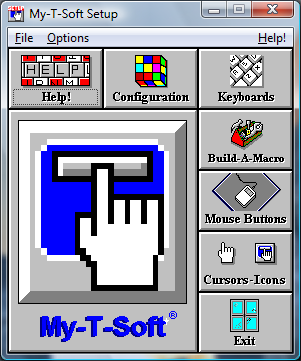

| My-T-Soft®: for Windows; Indestructible Keyboards and Indispensable Utilities; Version 1.80; User's Guide | ||
|---|---|---|
| Prev | Chapter 5. My-T-Soft Setup | Next |

My-T-Soft Setup provides an easy interface to change options, settings, and the configuration for My-T-Soft.
Advanced Notes: The files KEYBOARD.KBF and MYTSOFT.INI contain all of the configuration information for My-T-Soft. There can also be Keyboard Macro files for customized Macro panels (e.g. MAC?????.KMF) and WordList files. All of these files are stored in a location determined by the ConfigPath entry in the MYTSOFT.INI file. (Refer to the ConfigPath entry in the Initialization file for additional information.) This location determines if the files are per user or shared, and the required permissions for normal operation. By default, these files are personalized for each user, and the specific location can be referenced from the File menu in My-T-Soft Setup. You may also access the Windows Control Panel from the File menu.
In the File menu, you can access Windows Control Panel, view the current folder location of the configuration files, Import/Export setting files, and Exit.
Run Control Panel - This opens the Windows Control Panel to access system level properties like Appearance, and available Keyboard Layouts. For most users, the Windows Control Panel not required - it is provided here as a convenience.
Show Config File Location - This displays the actual path to the My-T-Soft configuration files for the current user. Refer to the ConfigPath entry in the Initialization file for additional information.
Export Current User Configuration - When selected, and the operation confirmed, this will save and compress the current user's configuration files and place a My-T-Soft_Settings.zip file on the Desktop. This file can be saved as a backup, or moved to another system to transfer the configuration from one system to another. If multiple exports are done, each file name will change by adding a "+" symbol to the export file name.
Import Configuration - This will open a File Selection window to select a "???_Settings.zip". If selected, and the operation confirmed, the current user's existing settings will be overwritten and be replaced with the settings contained within the selected file. For best results, use settings files from the same product & version, and perform this operation from My-T-Soft Setup while My-T-Soft is closed
Exit - this will Close and Exit My-T-Soft Setup.
In the Options menu, each major Setup section can be accessed, along with Save options when running My-T-Soft.
When My-T-Soft is running and My-T-Soft Setup is opened, the setting Save Settings on Exit is checked "On" by default. This synchronizes My-T-Soft with the changes made in Setup and My-T-Soft. If this option is checked "Off" and My-T-Soft is running while changing settings, the settings will be saved as normal upon an "OK", but these changes will not be reflected in My-T-Soft until it is restarted.
Save After Move - the current settings and position are saved after the completion of a move. This can be useful to always preserve the current position while operating My-T-Soft.
Save After Change - this saves the settings and position after a size or panel change. This can be helpful in preserving the current configuration.
Save At Close - the configuration and position will be saved when My-T-Soft is closed. This ensures that My-T-Soft will always open in the last used configuration.
Save At End Session - if Windows is shut-down or the user logs off, the current settings and position will be saved.
Access to Help and the Help Index (i.e. access to this guide) are available from the Help Menu.
You may also Check for Updates... from the Help Menu in My-T-Soft Setup.
About My-T-Soft... in the Help Menu provides version and release information about My-T-Soft.